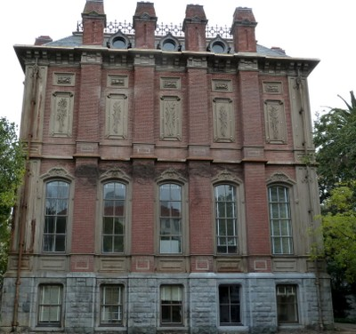
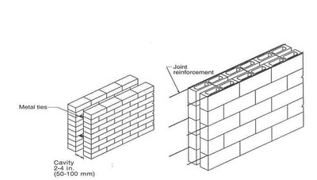
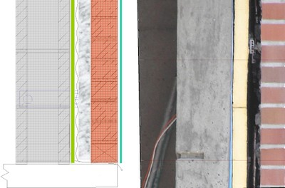
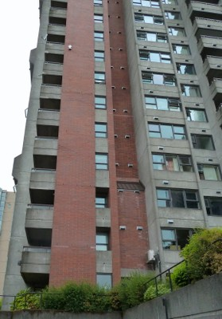
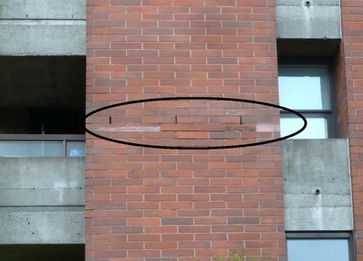
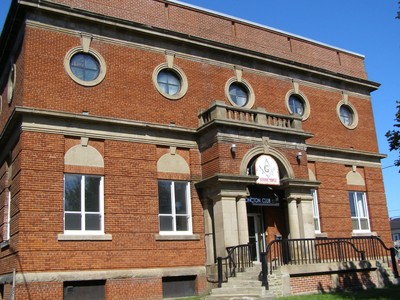
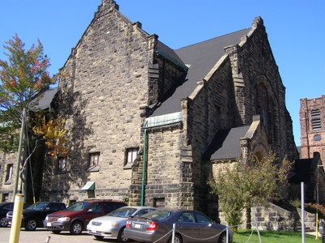

Mampostería [EWMA]
Todos los tipos de unidades de mampostería utilizados como revestimiento, relleno , o estructura de la pared expuesta. Incluye una variedad de unidades de mampostería , incluyendo ladrillos de adobe y bloques , ladrillos de arcilla cocida y bloques , piedra, baldosas de cerámica . A menudo es difícil identificar el tipo de unidades de mampostería una vez que las paredes han sido cubiertas por yeso. Estas paredes pueden ser en forma de chapas, paredes de la cavidad , muros de relleno , así como todos estos materiales utilizados como Muro estructural (una parte del sistema resistente a cargas laterales) , y en los que no están cubiertas por otro material.

Mampostería de piedra en la primera planta y mampostería de ladrillo encima, Berkeley, California (S. Brzev)

Una pared de mampostería exterior puede ser una parte del sistema de pared de la cavidad , que consiste en dos paredes de mampostería separadas por un espacio de aire ; por lo general , una de las paredes es de soporte de carga , mientras que el otro es de chapa ( revestimiento) . Estas paredes pueden estar conectados por lazos de metal , y el refuerzo horizontal pueden proporcionarse(A. Charleson)

Enchapados de mampostería son paredes exteriores comunes en Canadá y los EE.UU. ; un revestimiento de mampostería es un muro de mampostería de ladrillo sujetado firmemente a un soporte estructural (por ejemplo, de mampostería pared de bloques de hormigón, acero o estructura de postes de madera). Una chapa se puede conectar a respaldo estructural por medio de cierres de metal. (B. McEwen)


Un ejemplo de un revestimiento de mampostería en un edificio de hormigón armado en Vancouver, Canada; El enchapdo puede ser identificado por los orificios de drenaje , como se muestra en la foto (S. Brzev)

Muros de mampostería de adobe : expuesta ( durante la construcción), Chile (S.Brzev)

Muros de mampostería de adobe recubiertos de yeso, Peru (C. Loaiza and M. Blondet, WHE)

Muros de mampostería de piedra : piedra labrada en la fachada delantera y mampostería de piedra sin labrar en la dirección perpendicular, France (S. Brzev)

Muros de ladrillo expuesto, Canada (S. Brzev)

Muros exteriores de mampostería de piedra, Canada (S. Brzev)

Muchos edificios en Lisboa , Portugal tienen baldosas cerámicas esmaltadas unidos a las paredes exteriores (S. Brzev)